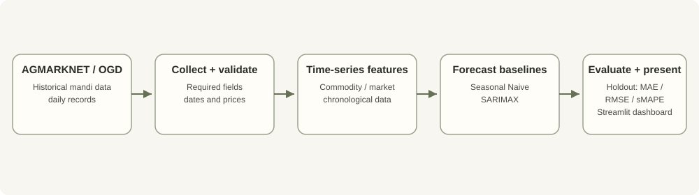

Chronological split
It preserves observation order and better reflects forecasting into the future. The exact holdout window and any rolling-origin validation should be recorded with the result table.
Project case study · Software development · Data workflow
A forecasting workflow that transforms historical mandi prices into time-series features, compares them against baselines, and presents the workflow through a dashboard.
Commodity price data is time-dependent and uneven across markets, varieties, and dates. A model result is meaningful only when the selected commodity/market, date filters, data gaps, baseline, and evaluation window are visible. Random splits can allow future information to influence training and produce an overly optimistic estimate.
AgroValue therefore centres on validated records, chronological features, baseline comparison, and holdout evaluation rather than a single prediction number.

It preserves observation order and better reflects forecasting into the future. The exact holdout window and any rolling-origin validation should be recorded with the result table.
Seasonal Naive provides a reference point. A more complex model should demonstrate improvement against that baseline rather than relying on its name alone.
Missing values, changed labels, duplicate observations, or source gaps can affect features and evaluation. Dataset filters must be reproducible.
Daily data collection can require an API key. Credentials should be configured as secrets or environment variables and never committed to the repository.
The repository documents installing dependencies from requirements.txt, starting the dashboard with streamlit run app.py, and collecting daily data with python dataset/fetch_daily.py. Daily collection requires a data.gov.in API key configured outside version control.
| Measure | Purpose | Published result |
|---|---|---|
| MAE | Average absolute forecast error on chronological holdout data. | Numerical value pending reproducible result record. |
| RMSE | Weights larger absolute errors more heavily. | Numerical value pending reproducible result record. |
| sMAPE | Scale-relative percentage error measure. | Numerical value pending reproducible result record. |
The metrics and holdout approach are described by the project; no specific accuracy result or financial impact is claimed before the data period, configuration, and output table are published.
Contribution details will be expanded after a walkthrough identifies the personally implemented ingestion, feature engineering, modelling, and dashboard components. Important limitations include price-regime changes, missing or sparse market observations, data availability, and the need for a clearly specified baseline. Screenshots, the selected holdout window, numerical results, and a short demo remain to be added.